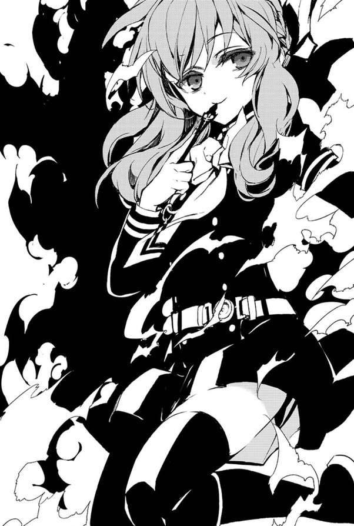

Shinoa Hiragi
Apariencia
Ella tiene una pequeña figura, con el pelo largo de color púrpura grisáceo, sujetada con un lazo burdeo o púrpura, con trenzas laterales y ojos marrones. Al principio de la serie, ella se muestra usando su uniforme escolar, un gris con azul claro con diseño de marinera. Sin embargo, después de Yūichirō fue aceptado en el Escuadrón Demonio de la Luna, Shinoa es a menudo vista usando su uniforme JIDA que es consiste en un abrigo negro de manga larga con dos filas de botones de oro en el frente, adornos de color verde claro alrededor de sus dos puños y hombros charreteras, que tiene una fourragère que pasa por debajo y alrededor de su lado, un brazalete en su brazo izquierdo, un collar de pie que tiene una corbata de lazo alrededor y una correa de tela blanca con una placa de oro. Así como un par de guantes blancos, falda negra, medias de color gris oscuro y botas negras hasta las rodillas. Su aparición ocasional no diferencia mucho de su uniforme JIDA. Las pequeñas diferencias es que ella no tiene sus guantes junto con la corbata de lazo en su cuello y lleva una camisa blanca de mangas largas de vestir con una camisola sobre ella en su lugar.
Shinoa Hīragi (柊 シノア, Hiiragi Shinoa) es un miembro del Escuadron Demonio de la Luna del Ejercito Demonio Imperial Japones

Página creeada por Valentina Vargas Sánchez